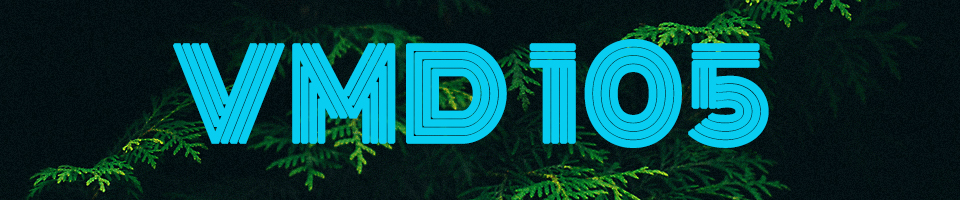
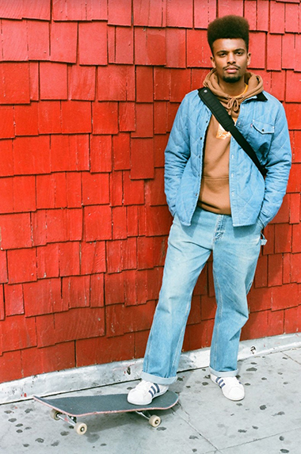

My name is Nile Gibbs and I am a student at City College. I am taking the class “Visual Media Design Skills,” to not only get the mandatory credits for a Design certificate but also to enhance my adobe skills. Throughout my life, I’ve gravitated towards a creative outlet of expressive art and I believe I could be an assistance to the world of design. Goals of mine are to have a career within the Graphic Design world, starting here, by obtaining a Design certificate at City College.